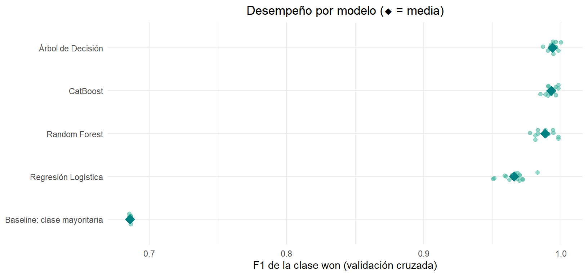
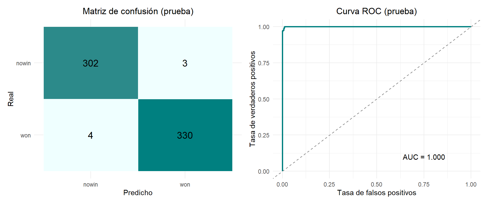
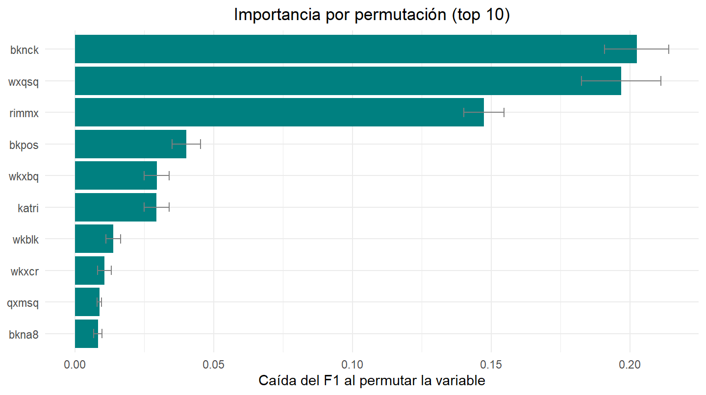
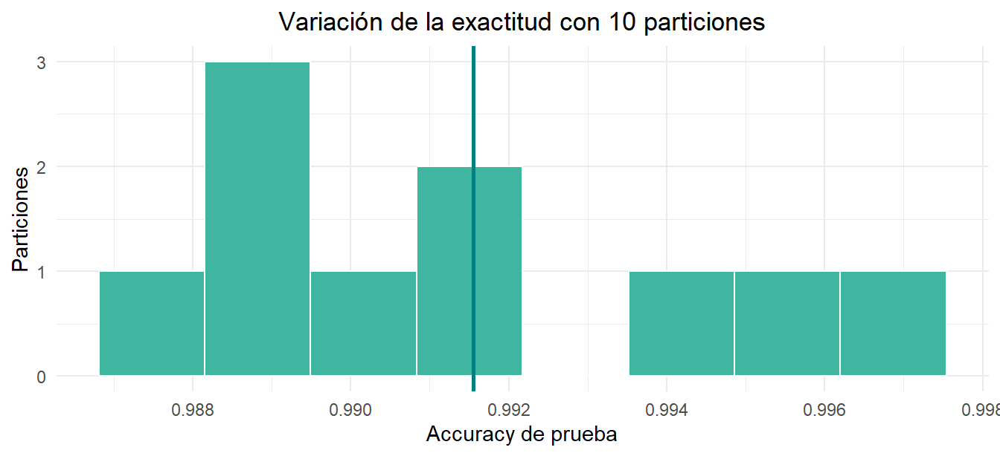

Chapter 3 Modelado Predictivo
Probaremos la Accuracy y el F1-Score entre 4 modelos para escoger el más apropiado: Regresión Logística, Árbol de Decisión, Random Forest y CatBoost.
3.1 Métricas
Con won (victoria del bando del peón) como clase positiva, y \(TP\), \(FP\), \(FN\) los verdaderos positivos, falsos positivos y falsos negativos:
\[ \text{Precisión}=\frac{TP}{TP+FP},\qquad \text{Recall}=\frac{TP}{TP+FN},\qquad F_1=\frac{2\cdot \text{Precisión}\cdot\text{Recall}}{\text{Precisión}+\text{Recall}} \]
El AUC-ROC es la probabilidad de que el modelo asigne mayor probabilidad de won a una posición won que a una nowin, tomadas al azar.
3.2 Estrategia de validación
Comparar modelos con una sola partición entrenamiento/prueba puede llevar a elegir un modelo por azar. Por eso el procedimiento es el siguiente:
- Se separa un 20 % de las posiciones como conjunto de prueba, de forma estratificada para conservar la proporción de clases.
- La codificación One-Hot usa los niveles definidos de cada variable y no emplea la variable objetivo, por lo que no hay fuga de información hacia la prueba.
- Los cuatro candidatos se entrenan con el 80 % restante, con sus hiperparámetros por defecto, y se comparan en el conjunto de prueba mediante Accuracy y F1-Score de la clase
won. - La decisión se confirma con validación cruzada estratificada repetida (5 particiones × 3 repeticiones = 15 evaluaciones por modelo) usando solo el 80 % de entrenamiento, junto con una línea base que siempre predice la clase mayoritaria y una prueba de Wilcoxon entre modelos.
- El modelo seleccionado se reentrena, se evalúa en la prueba con la matriz de confusión, la curva ROC y un intervalo de confianza para la exactitud, se interpreta mediante la importancia por permutación, y se comprueba su estabilidad con otras particiones. El modelo se guarda para el dashboard.
3.3 Librerías
library(tidyverse)
library(glmnet) # regresión logística regularizada (equivale a la L2 de scikit-learn)
library(rpart) # árbol de decisión
library(ranger) # random forest
library(catboost) # CatBoost
library(knitr)
library(kableExtra)
library(patchwork)
library(jsonlite)
SEED <- 42
POS <- "won" # clase positiva
COLOR_WON <- "#008080"; COLOR_NOWIN <- "#40B5A0"
fmt4 <- function(x) sprintf("%.4f", x)
fmt3 <- function(x) sprintf("%.3f", x)
fp <- function(p) ifelse(p < 0.001, "< 0.001", sprintf("%.3f", p))
tabla_bonita <- function(d, ...) {
kable(d, align = "c", ...) %>%
kable_styling(bootstrap_options = c("striped", "hover", "condensed"),
full_width = FALSE, position = "center")
}3.3.1 Funciones auxiliares
Se definen una sola vez: la codificación One-Hot, las métricas, la partición estratificada, y una función que ajusta y otra que predice, de modo que los cuatro modelos (y la línea base) se tratan exactamente igual.
# One-Hot de todas las predictoras (equivale al OneHotEncoder de scikit-learn).
# Los niveles de cada factor quedan fijos, así que las columnas son las mismas en cualquier subconjunto.
codificar <- function(d) {
m <- model.matrix(~ . - 1, data = d,
contrasts.arg = lapply(d, contrasts, contrasts = FALSE))
colnames(m) <- make.names(colnames(m))
m
}
# AUC-ROC = P(prob. de won de un won > prob. de won de un nowin)
auc_rank <- function(y, p) {
pos <- y == POS
n1 <- sum(pos); n0 <- sum(!pos)
(sum(rank(p)[pos]) - n1 * (n1 + 1) / 2) / (n1 * n0)
}
metricas <- function(y, p) {
pred <- ifelse(p >= 0.5, "won", "nowin")
tp <- sum(pred == "won" & y == "won")
fp <- sum(pred == "won" & y == "nowin")
fn <- sum(pred == "nowin" & y == "won")
prec <- ifelse(tp + fp == 0, 0, tp / (tp + fp))
rec <- ifelse(tp + fn == 0, 0, tp / (tp + fn))
f1 <- ifelse(prec + rec == 0, 0, 2 * prec * rec / (prec + rec))
c(accuracy = mean(pred == y), precision = prec, recall = rec, f1 = f1, auc = auc_rank(y, p))
}
# Partición estratificada: devuelve los índices de prueba
particion <- function(y, prop_test = 0.2, seed) {
set.seed(seed)
sort(unlist(lapply(split(seq_along(y), y),
function(i) sample(i, size = round(length(i) * prop_test)))))
}
# Ajusta un modelo con los valores por defecto de cada algoritmo
ajustar <- function(modelo, Xtr, ytr) {
Xm <- codificar(Xtr)
switch(modelo,
"Baseline: clase mayoritaria" = list(tipo = "base", p = mean(ytr == POS)),
"Regresión Logística" = list(tipo = "glm",
# ridge con lambda = 1/n: equivale a la regularización L2 por defecto (C = 1) de scikit-learn
fit = glmnet(Xm, ytr, family = "binomial", alpha = 0,
lambda = 1 / nrow(Xm), standardize = FALSE)),
"Árbol de Decisión" = list(tipo = "tree",
# árbol sin podar ni limitar la profundidad, como el de scikit-learn por defecto
fit = rpart(y ~ ., data = data.frame(y = ytr, Xm), method = "class",
control = rpart.control(cp = 0, minsplit = 2, minbucket = 1, xval = 0))),
"Random Forest" = list(tipo = "rf",
fit = ranger(y ~ ., data = data.frame(y = ytr, Xm), num.trees = 100,
probability = TRUE, seed = SEED)),
"CatBoost" = list(tipo = "cb",
fit = catboost.train(
catboost.load_pool(Xm, label = as.integer(ytr == POS)),
params = list(loss_function = "Logloss", random_seed = SEED,
logging_level = "Silent", allow_writing_files = FALSE))),
stop("Modelo desconocido: ", modelo))
}
# Probabilidad de 'won' para posiciones nuevas
prob_won <- function(m, Xnew) {
Xm <- codificar(Xnew)
switch(m$tipo,
base = rep(m$p, nrow(Xm)),
glm = as.numeric(predict(m$fit, Xm, type = "response")),
tree = as.numeric(predict(m$fit, data.frame(Xm), type = "prob")[, POS]),
rf = as.numeric(predict(m$fit, data.frame(Xm))$predictions[, POS]),
cb = as.numeric(catboost.predict(m$fit, catboost.load_pool(Xm),
prediction_type = "Probability")))
}3.4 Preparación de los datos
Se parte del conjunto depurado, con 32 variables predictoras categóricas y la variable objetivo class. Se separan las predictoras (X) del objetivo (y) y se dividen los datos en 80 % entrenamiento y 20 % prueba, de forma estratificada.
# El conjunto depurado viene del capítulo de EDA. Si se compila este capítulo solo:
# (al final del EDA: saveRDS(datos, "datos_limpios.rds"))
if (!exists("datos")) datos <- readRDS("datos_limpios.rds")
df <- datos
X <- df %>% select(-class) %>% mutate(across(everything(), as.factor))
y <- factor(df$class, levels = c("nowin", "won"))
idx_test <- particion(y, 0.2, SEED)
X_train <- X[-idx_test, ]; X_test <- X[idx_test, ]
y_train <- y[-idx_test]; y_test <- y[idx_test]
data.frame(
Clase = levels(y),
Entrenamiento = round(as.numeric(prop.table(table(y_train))), 3),
Prueba = round(as.numeric(prop.table(table(y_test))), 3),
n_train = as.numeric(table(y_train)),
n_test = as.numeric(table(y_test))
) %>% tabla_bonita()| Clase | Entrenamiento | Prueba | n_train | n_test |
|---|---|---|---|---|
| nowin | 0.478 | 0.477 | 1222 | 305 |
| won | 0.522 | 0.523 | 1335 | 334 |
3.5 Comparación preliminar de los modelos
Los cuatro candidatos se entrenan con el 80 % de entrenamiento y se evalúan una vez en el conjunto de prueba. La tabla ordena los modelos por F1-Score.
nombres_modelos <- c("Regresión Logística", "Árbol de Decisión", "Random Forest", "CatBoost")
df_resultados <- map_dfr(nombres_modelos, function(nm) {
m <- ajustar(nm, X_train, y_train)
mt <- metricas(y_test, prob_won(m, X_test))
tibble(Modelo = nm, Accuracy = unname(mt["accuracy"]), `F1-Score` = unname(mt["f1"]))
}) %>% arrange(desc(`F1-Score`))
tabla_bonita(df_resultados, digits = 4)| Modelo | Accuracy | F1-Score |
|---|---|---|
| Árbol de Decisión | 0.9953 | 0.9955 |
| CatBoost | 0.9890 | 0.9895 |
| Random Forest | 0.9844 | 0.9850 |
| Regresión Logística | 0.9671 | 0.9683 |
En la partición de prueba, CatBoost obtiene el mejor resultado (Accuracy = 0.9890, F1-Score = 0.9895), seguido del Árbol de Decisión (0.9953; 0.9955), Random Forest (0.9844; 0.9850) y la Regresión Logística (0.9671; 0.9683). La diferencia entre CatBoost y el árbol equivale a unas 4 posición(es) de las 639 de prueba, por lo que no es concluyente. La brecha con la regresión logística (≈ 2.2 puntos de exactitud) sí es amplia. Todos los modelos superan con holgura la referencia del 52 % de la clase mayoritaria.
3.6 Validación cruzada
Para que la elección no dependa de una sola partición, cada modelo se evalúa 15 veces (validación cruzada estratificada de 5 particiones, repetida 3 veces) usando únicamente el 80 % de entrenamiento. Se añade una línea base que siempre predice la clase mayoritaria. Puede tardar unos minutos (CatBoost es el más lento).
# Validación cruzada estratificada repetida: devuelve los índices de VALIDACIÓN de cada partición
estratificado_repetido <- function(y, k = 5, repeticiones = 3, seed = SEED) {
folds <- list()
for (r in seq_len(repeticiones)) {
set.seed(seed + r)
asignado <- integer(length(y))
for (cl in levels(y)) {
i <- which(y == cl)
asignado[i] <- sample(rep_len(seq_len(k), length(i)))
}
for (f in seq_len(k)) folds[[length(folds) + 1]] <- which(asignado == f)
}
folds
}
candidatos <- c("Baseline: clase mayoritaria", nombres_modelos)
folds <- estratificado_repetido(y_train) # 15 evaluaciones por modelo
cv_res <- map(candidatos, function(nm) {
res <- map_dfr(folds, function(val_idx) {
m <- ajustar(nm, X_train[-val_idx, ], y_train[-val_idx])
mv <- metricas(y_train[val_idx], prob_won(m, X_train[val_idx, ]))
mt <- metricas(y_train[-val_idx], prob_won(m, X_train[-val_idx, ]))
tibble(accuracy = unname(mv["accuracy"]), f1 = unname(mv["f1"]),
auc = unname(mv["auc"]), acc_train = unname(mt["accuracy"]))
})
message(sprintf("%-30s F1 = %.4f", nm, mean(res$f1)))
res
})
names(cv_res) <- candidatostabla_cv <- imap_dfr(cv_res, function(r, nm) {
tibble(
Modelo = nm,
Accuracy = sprintf("%.4f ± %.4f", mean(r$accuracy), sd(r$accuracy)),
`F1 (won)` = sprintf("%.4f ± %.4f", mean(r$f1), sd(r$f1)),
`AUC-ROC` = sprintf("%.4f ± %.4f", mean(r$auc), sd(r$auc)),
`Brecha train − val (acc)` = round(mean(r$acc_train - r$accuracy), 4),
.f1 = mean(r$f1))
}) %>% arrange(desc(.f1)) %>% select(-.f1)
tabla_bonita(tabla_cv)| Modelo | Accuracy | F1 (won) | AUC-ROC | Brecha train − val (acc) |
|---|---|---|---|---|
| Árbol de Decisión | 0.9937 ± 0.0033 | 0.9940 ± 0.0032 | 0.9940 ± 0.0034 | 0.0059 |
| CatBoost | 0.9926 ± 0.0038 | 0.9929 ± 0.0036 | 0.9993 ± 0.0005 | 0.0059 |
| Random Forest | 0.9879 ± 0.0065 | 0.9884 ± 0.0062 | 0.9990 ± 0.0007 | 0.0076 |
| Regresión Logística | 0.9644 ± 0.0086 | 0.9658 ± 0.0083 | 0.9931 ± 0.0019 | 0.0032 |
| Baseline: clase mayoritaria | 0.5221 ± 0.0005 | 0.6860 ± 0.0004 | 0.5000 ± 0.0000 | 0.0000 |
# Distribución de los 15 valores de F1 de cada modelo (un punto = una partición)
df_f1 <- imap_dfr(cv_res, ~ tibble(Modelo = .y, f1 = .x$f1))
ggplot(df_f1, aes(x = f1, y = factor(Modelo, levels = rev(tabla_cv$Modelo)))) +
geom_jitter(height = .15, alpha = .55, size = 1.8, color = COLOR_NOWIN) +
stat_summary(fun = mean, geom = "point", shape = 18, size = 4.5, color = COLOR_WON) +
labs(x = "F1 de la clase won (validación cruzada)", y = NULL,
title = "Desempeño por modelo (◆ = media)") +
theme_minimal(base_size = 11) +
theme(plot.title = element_text(hjust = 0.5))
En validación cruzada, CatBoost vuelve a obtener el mayor F1 medio (0.9929 ± 0.0036), seguido del Árbol de Decisión (0.9940 ± 0.0032), Random Forest (0.9884 ± 0.0062) y la Regresión Logística (0.9658 ± 0.0083). La línea base de la clase mayoritaria queda en una exactitud de 0.522 y un AUC de 0.500, de modo que los cuatro modelos capturan señal real. Las brechas entre entrenamiento y validación son pequeñas en todos (entre 0.003 y 0.008), así que no hay sobreajuste preocupante. En el gráfico, los tres modelos basados en árboles se solapan casi por completo y la regresión logística queda claramente por debajo. CatBoost tiene además el AUC-ROC más alto y estable (0.9993 ± 0.0005, frente a 0.9940 ± 0.0034 del árbol).
3.6.1 ¿Las diferencias entre modelos son reales o son ruido?
Como todos los modelos se evalúan sobre las mismas 15 particiones, se puede comparar el F1 de CatBoost con el de cada uno de los demás, partición por partición (prueba de rangos con signo de Wilcoxon). Es una guía, no una prueba exacta: las particiones de la validación cruzada comparten datos entre sí, lo que hace los p-valores algo optimistas. Cuando dos modelos empatan en todas las particiones, el p-valor se reporta como 1.
MODELO <- "CatBoost"
comp <- map_dfr(setdiff(reales, MODELO), function(n) {
d <- cv_res[[MODELO]]$f1 - cv_res[[n]]$f1
p <- tryCatch(suppressWarnings(wilcox.test(d, mu = 0, exact = FALSE)$p.value),
error = function(e) 1) # todas las diferencias son exactamente cero
if (is.na(p)) p <- 1
tibble(Modelo = n, dif = mean(d), gana = mean(d >= 0) * 100, p = p)
})
comp %>%
mutate(across(c(dif, p), ~ round(.x, 4)), gana = round(gana, 1)) %>%
rename(`Dif. media de F1 (CatBoost − modelo)` = dif,
`% de particiones donde CatBoost gana o empata` = gana,
`p (Wilcoxon)` = p) %>%
tabla_bonita()| Modelo | Dif. media de F1 (CatBoost − modelo) | % de particiones donde CatBoost gana o empata | p (Wilcoxon) |
|---|---|---|---|
| Regresión Logística | 0.0271 | 100.0 | 0.0007 |
| Árbol de Decisión | -0.0011 | 40.0 | 0.2443 |
| Random Forest | 0.0044 | 93.3 | 0.0026 |
CatBoost supera de forma significativa a la Regresión Logística (diferencia media de F1 de 0.0271; gana o empata en el 100 % de las particiones; p = < 0.001) y, con un margen mínimo, a Random Forest (0.0044; p = 0.003). No se distingue del Árbol de Decisión (-0.0011; p = 0.244). Como las particiones comparten datos, los p-valores son algo optimistas, y la ventaja sobre Random Forest debe tomarse como marginal. Lo que sí indican los resultados es que la señal no es puramente aditiva: la regresión logística, que suma efectos independientes, queda unos 3 puntos de F1 por debajo de los modelos de árboles, que pueden representar combinaciones de condiciones tácticas. Entre los modelos de árboles las diferencias son demasiado pequeñas para declarar un ganador claro. Se selecciona CatBoost por tener el F1 medio más alto con la menor variabilidad entre particiones y el mejor AUC, algo útil porque el dashboard mostrará probabilidades.
3.7 Modelo final
Con CatBoost seleccionado, se entrena el modelo sobre el conjunto de entrenamiento y se guarda (más abajo) en el formato nativo de CatBoost. Como en R la codificación One-Hot es una función (codificar()), el dashboard debe aplicarla a las categorías originales (t, f, g, l, …) antes de predecir; por eso se guardan también los niveles de cada variable.
3.8 Evaluación en el conjunto de prueba
Hasta aquí el conjunto de prueba solo sirvió para la comparación preliminar. Se evalúa ahora el modelo final: la matriz de confusión muestra cuántas posiciones de cada clase se clasifican bien y en qué dirección se equivoca el modelo (un falso won es una victoria del peón que el modelo anticipa y no ocurre; un falso nowin es la contraria), y la curva ROC resume el desempeño para todos los umbrales de decisión. Como el conjunto de prueba es pequeño, la exactitud se acompaña de un intervalo bootstrap al 95 %.
p_test <- prob_won(pipeline_ganador, X_test)
y_pred <- factor(ifelse(p_test >= 0.5, "won", "nowin"), levels = c("nowin", "won"))
mask_err <- y_pred != y_test
mt_test <- metricas(y_test, p_test)
metricas_test <- c(Accuracy = mt_test[["accuracy"]], Precisión = mt_test[["precision"]],
Recall = mt_test[["recall"]], F1 = mt_test[["f1"]], `AUC-ROC` = mt_test[["auc"]])
as.data.frame(t(round(metricas_test, 4)), row.names = "CatBoost (prueba)") %>% tabla_bonita()| Accuracy | Precisión | Recall | F1 | AUC-ROC | |
|---|---|---|---|---|---|
| CatBoost (prueba) | 0.989 | 0.991 | 0.988 | 0.9895 | 0.9998 |
# Matriz de confusión
conf <- as.data.frame(table(Real = y_test, Predicho = y_pred))
g_conf <- ggplot(conf, aes(x = Predicho, y = fct_rev(Real), fill = Freq)) +
geom_tile(color = "white") +
geom_text(aes(label = Freq), size = 5) +
scale_fill_gradient(low = "#F0FFFF", high = COLOR_WON, guide = "none") +
labs(title = "Matriz de confusión (prueba)", x = "Predicho", y = "Real") +
theme_minimal(base_size = 11) + theme(plot.title = element_text(hjust = 0.5))
# Curva ROC
o <- order(p_test, decreasing = TRUE); ys <- (y_test == POS)[o]
roc <- tibble(fpr = c(0, cumsum(!ys) / sum(!ys)), tpr = c(0, cumsum(ys) / sum(ys)))
g_roc <- ggplot(roc, aes(fpr, tpr)) +
geom_abline(linetype = "dashed", color = "grey50") +
geom_line(color = COLOR_WON, linewidth = 1) +
annotate("text", x = 0.75, y = 0.1, label = sprintf("AUC = %.3f", mt_test[["auc"]])) +
labs(title = "Curva ROC (prueba)", x = "Tasa de falsos positivos", y = "Tasa de verdaderos positivos") +
theme_minimal(base_size = 11) + theme(plot.title = element_text(hjust = 0.5))
g_conf + g_roc
# Reporte por clase
map_dfr(c("nowin", "won"), function(cl) {
tp <- sum(y_pred == cl & y_test == cl); fp_ <- sum(y_pred == cl & y_test != cl); fn <- sum(y_pred != cl & y_test == cl)
p <- tp / (tp + fp_); r <- tp / (tp + fn)
tibble(Clase = cl, Precisión = p, Recall = r, F1 = 2 * p * r / (p + r), Soporte = sum(y_test == cl))
}) %>% tabla_bonita(digits = 4)| Clase | Precisión | Recall | F1 | Soporte |
|---|---|---|---|---|
| nowin | 0.9869 | 0.9902 | 0.9885 | 305 |
| won | 0.9910 | 0.9880 | 0.9895 | 334 |
# Incertidumbre de la exactitud: intervalo bootstrap (2000 remuestreos del conjunto de prueba)
set.seed(SEED)
acierto <- as.integer(!mask_err)
boots <- replicate(2000, mean(sample(acierto, length(acierto), replace = TRUE)))
ic_acc <- quantile(boots, c(0.025, 0.975))
n_fw <- sum(y_pred == "won" & mask_err); n_fn <- sum(y_pred == "nowin" & mask_err)En las 639 posiciones de prueba, el modelo acierta 632 y falla 7 (exactitud = 0.9890, con intervalo bootstrap al 95 % de [0.9797, 0.9969]). Hay 3 falso(s) won (una posición nowin que el modelo predice como victoria del peón) y 4 falso(s) nowin. La precisión de won es 0.9910, el recall 0.9880 y el AUC-ROC es 0.9998. Con un conjunto de prueba tan pequeño, una posición de diferencia mueve la exactitud en 0.0016; por eso el resultado debe leerse junto con el intervalo bootstrap.
3.9 Interpretabilidad: ¿qué variables usa el modelo?
La importancia por permutación mide cuánto cae el F1 en el conjunto de prueba al barajar al azar los valores de una variable: si el modelo depende de ella, el desempeño empeora. Se calcula sobre el modelo completo, de modo que cada variable se permuta con sus categorías originales. Es una medida de la dependencia del modelo, no una relación causal.
f1_base <- unname(mt_test["f1"])
f1_won <- function(Xd) unname(metricas(y_test, prob_won(pipeline_ganador, Xd))["f1"])
set.seed(SEED)
imp <- map_dfr(names(X_test), function(v) {
caidas <- replicate(20, { Xp <- X_test; Xp[[v]] <- sample(Xp[[v]]); f1_base - f1_won(Xp) })
tibble(variable = v, caida = mean(caidas), sd = sd(caidas))
}) %>% arrange(desc(caida))
imp %>% slice_head(n = 10) %>%
ggplot(aes(x = caida, y = fct_reorder(variable, caida))) +
geom_col(fill = COLOR_WON) +
geom_errorbar(aes(xmin = caida - sd, xmax = caida + sd), width = .3, color = "grey50") +
labs(x = "Caída del F1 al permutar la variable", y = NULL,
title = "Importancia por permutación (top 10)") +
theme_minimal(base_size = 11) + theme(plot.title = element_text(hjust = 0.5))
3.9.1 ¿Coincide con lo que mostró el EDA?
Se compara con la V de Cramér de cada variable con class.
cramer_mod <- function(a, b) {
tbl <- table(a, b)
chi2 <- suppressWarnings(chisq.test(tbl)$statistic)
sqrt(as.numeric(chi2) / (sum(tbl) * (min(dim(tbl)) - 1)))
}
v_cramer <- sort(sapply(names(X), function(v) cramer_mod(X[[v]], y)), decreasing = TRUE)
top5_eda <- names(v_cramer)[1:5]
top5_mod <- imp$variable[1:5]
solap <- length(intersect(top5_eda, top5_mod))
tibble(`Top 5 V de Cramér (EDA)` = top5_eda, `Top 5 permutación (modelo)` = top5_mod) %>% tabla_bonita()| Top 5 V de Cramér (EDA) | Top 5 permutación (modelo) |
|---|---|
| rimmx | bknck |
| wxqsq | wxqsq |
| bknck | rimmx |
| wkxbp | bkpos |
| katri | wkxbq |
Tres variables concentran casi toda la importancia: bknck (caída del F1 de ≈ 0.202 al permutarla), wxqsq (≈ 0.197) y rimmx (≈ 0.147). Les siguen, muy por debajo, bkpos (≈ 0.040), wkxbq (≈ 0.029) y katri (≈ 0.029). 3 de las 5 variables principales del modelo coinciden con las de mayor V de Cramér del EDA, lo que da coherencia entre ambos análisis. Si alguna variable del EDA queda fuera del ranking del modelo, una explicación posible es que comparte información con otras (por ejemplo, wkxbp con whxbp y wkxcr, con V de 0.67 y 0.56), por lo que el modelo puede apoyarse en cualquiera de ellas. La permutación mide cuánto depende el modelo de una variable, no en qué dirección empuja; esa lectura sigue siendo la del EDA: rimmx = t solo aparece en posiciones won, y el control blanco de a8 (wxqsq) y el jaque al rey negro (bknck) se asocian a nowin.
3.10 Estabilidad ante distintas particiones
La exactitud de prueba depende de qué 20 % de las posiciones cayó en la prueba. Para ver cuánto varía, se repite la partición con 10 semillas distintas, reentrenando el modelo cada vez. Este ejercicio mide la dispersión.
est <- map_dfr(0:9, function(s) {
it <- particion(y, 0.2, s)
m <- ajustar("CatBoost", X[-it, ], y[-it])
mt <- metricas(y[it], prob_won(m, X[it, ]))
tibble(accuracy = unname(mt["accuracy"]), f1 = unname(mt["f1"]))
})
ggplot(est, aes(accuracy)) +
geom_histogram(bins = 8, fill = COLOR_NOWIN, color = "white") +
geom_vline(xintercept = mean(est$accuracy), color = COLOR_WON, linewidth = 1) +
labs(x = "Accuracy de prueba", y = "Particiones", title = "Variación de la exactitud con 10 particiones") +
theme_minimal(base_size = 11) + theme(plot.title = element_text(hjust = 0.5))
tibble(estadístico = c("mean", "std", "min", "max"),
accuracy = c(mean(est$accuracy), sd(est$accuracy), min(est$accuracy), max(est$accuracy)),
f1 = c(mean(est$f1), sd(est$f1), min(est$f1), max(est$f1))) %>%
tabla_bonita(digits = 4)| estadístico | accuracy | f1 |
|---|---|---|
| mean | 0.9915 | 0.9919 |
| std | 0.0031 | 0.0029 |
| min | 0.9875 | 0.9880 |
| max | 0.9969 | 0.9970 |
Con 10 particiones distintas, la exactitud media fue 0.9915 (desviación 0.0031), con valores entre 0.9875 y 0.9969. Coincide con la validación cruzada (0.9926) y permite comparar con la partición original (0.9890): el desempeño esperado del modelo es, por tanto, de ≈ 99.2 %.
3.11 Guardado del modelo
Se guarda el modelo en el formato nativo de CatBoost (.cbm) y un archivo modelo_meta.json con las variables, los niveles de cada una y las métricas.
## [1] TRUEmeta <- list(
clase_positiva = POS,
variables = names(X),
niveles = lapply(X, levels),
metricas_test = as.list(round(metricas_test, 4)),
ic95_accuracy = as.numeric(ic_acc)
)
write_json(meta, "modelo_meta.json", auto_unbox = TRUE, pretty = TRUE)
# Comprobación: el modelo guardado reproduce las predicciones
cargado <- catboost.load_model("modelo_ajedrez.cbm")
p_cargado <- as.numeric(catboost.predict(cargado, catboost.load_pool(codificar(X_test)),
prediction_type = "Probability"))
stopifnot(isTRUE(all.equal(p_cargado, p_test)))3.12 Conclusiones
- Se compararon cuatro algoritmos con el mismo preprocesamiento (One-Hot) sobre 3.196 posiciones y 32 variables categóricas, con una partición estratificada 80/20 y validación cruzada repetida (5 × 3) sobre el 80 % de entrenamiento.
- CatBoost obtuvo el F1 medio más alto en validación cruzada (0.9929 ± 0.0036) y el mejor AUC-ROC (0.9993). Supera de forma significativa a la Regresión Logística y, marginalmente, a Random Forest, pero no se distingue del Árbol de Decisión. La línea base de la clase mayoritaria queda en una exactitud de 0.522.
- En el conjunto de prueba, el modelo final alcanza Accuracy = 0.9890, F1 = 0.9895 y AUC-ROC = 0.9998, con 7 errores en 639 posiciones (3 falso(s) won y 4 falso(s) nowin).
- Con 10 particiones distintas la exactitud media es 0.9915 (desviación 0.0031), por lo que el desempeño esperado es de ≈ 99.2 %.
- Las variables que más pesan en el modelo son bknck, wxqsq y rimmx. 3 de las 5 principales coinciden con las que el EDA identificó por V de Cramér.
- El modelo se guardó en
modelo_ajedrez.cbm, junto conmodelo_meta.json, para su uso en el dashboard. - Limitaciones. Las diferencias entre CatBoost y los otros modelos de árboles son pequeñas, y no se ajustaron hiperparámetros. Las variables fueron diseñadas por Shapiro como predicados de conocimiento experto sobre el final, no son mediciones libres de partidas reales; esto explica la alta separabilidad de las clases. El resultado describe qué tan bien se aprende esa codificación experta y no debe extrapolarse a partidas reales. Además, este trabajo usa los colores de UCI (peón negro, torre blanca) y lee
woncomo “gana el bando del peón”, porque es lo que indican los datos (todas las posicionesnowintienenrimmx = f). La tesis original de Shapiro (1983) usa los colores contrarios y UCI rotula las clases como “White-can-win”. Esto afecta la interpretación de las variables, no el desempeño del modelo.